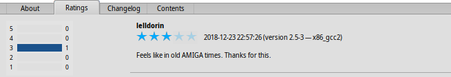
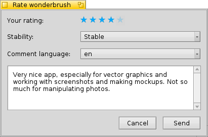

| Indeks |
| Filter Daftar Area Info Perkakas dan tunjukkan menu Membuat akun pengguna Peringkat dan komentar Log diagnosa |
 HaikuDepot
HaikuDepot
| Deskbar: | ||
| Lokasi: | /boot/system/apps/HaikuDepot | |
| Pengaturan: | ~/config/settings/HaikuDepot/main_settings ~/config/cache/HaikuDepot/ - Cached icons, skrinsut, deskripsi, dll. |
HaikuDepot is the central application when it comes to managing your software packages. With it you can browse and search through package repositories and install and uninstall packages. By default, HaikuDepot starts up with a list of "Featured packages", software that's deemed interesting to many users.

Tab kedua menunjukkan ,tampilan berubah menjadi ikon yang lebih kecil dan informasi lebih lanjut diatur dalam kolom:

 Filter
Filter
Di bagian atas kami menemukan beberapa cara untuk memfilter daftar paket yang tersedia di bawah:
Menu pop-up memungkinkan Anda membatasi daftar untuk kategori individual seperti "Audio" atau "Games".
Bidang teks memfilter daftar ke paket-paket yang memiliki semua string yang dimasukkan (dibatasi-spasi) dalam nama atau deskripsi mereka.
menu Pada bilah menu menentukan repo mana yang sedang di-kueri. Paket "Lokal" adalah paket yang diinstal dari suatu tempat selain dari repo online; mungkin dari USB thumb drive atau diunduh dari beberapa situs web atau paket yang telah Anda miliki membangun diri sendiri.
Daftar
Seperti pada jendela Tracker, Anda dapat memilih dari menu konteks kolom mana yang akan ditampilkan dengan mengklik kanan judul kolom. Klik kiri mengurutkan daftar sesuai dengan kolom itu. Tentu saja, Anda dapat mengatur ulang kolom dengan menyeretnya ke posisi baru.
Kolom status suatu paket dapat memiliki salah satu dari beberapa status:
: Paket saat ini diinstal dan siap digunakan.
: Paket ada di repositori itu dan dapat diunduh dan diinstal. Jika ada dependensi pada paket lain, Anda akan diberitahu tentang itu saat menginstal dan mendapatkan pilihan untuk mengunduh/menginstal semua yang diperlukan.
: Pending ditampilkan untuk paket yang antri untuk diunduh / dipasang. Saat sebuah paket diunduh, progresnya ditampilkan sebagai persentase.
Anda dapat mengambil garis putus-putus antara daftar paket dan area info untuk mengubah ukuran vertikal daftar paket.
Area Info
At the bottom is an area that displays information on the package that is currently selected in the list above it.
To the right of package name, author, rating and version is a button, that – depending on the current state of the package – lets you or it. If a package is already installed, you'll find an additional button there to the application.
Dibawah ada empat tab yaitu: Tentang, Peringkat, Logperubahan and Isi.
Tab pertama memiliki deskripsi terperinci tentang paket, serta tangkapan layar dan alamat kontak serta URL tim yang mengelola perangkat lunak yang dikemas, jika tersedia. Mengklik thumbnail gambar mini akan membukanya dalam ukuran penuh di jendela baru
Tab kedua menunjukkan peringkat dan komentar pengguna, jika tersedia.
Di sebelah kiri adalah statistik, menunjukkan jumlah bintang (1 hingga 5) paket yang didapat dari berapa banyak pengguna.
Di tengah adalah komentar pengguna dengan nama panggilan mereka, jumlah bintang yang mereka berikan paket dan versi paket yang mereka beri peringkat atau komentari. Anda akan menemukan lebih banyak tentang bagaimana menilai suatu paket oleh anda sendiri lebih jauh ke bawah..
Di sini Anda menemukan riwayat terperinci dari semua versi paket yang telah dirilis sejauh ini, jika pengelola paket memberikan informasi itu.
Tab terakhir menunjukkan semua file dan folder yang berisi paket. Ini hanya berfungsi untuk paket yang sudah diunduh.
Perkakas dan tunjukkan menu
Di menu di bagian atas jendela, Anda akan menemukan item untuk . Ini akan meminta daftar terbaru dari semua paket yang tersedia dari repositori.
Item kedua adalah untuk . Ini membuka preferensi Repositori , untuk menambah/menghapus atau menonaktifkan dan mengaktifkan repositori.
buka SoftwareUpdater untuk mencari dan menginstal paket yang diperbarui.
Di bawah Anda dapat memilih untuk juga menampilkan dan dalam daftar paket. Untuk pengguna normal, hal itu tidak menarik dan hanya akan mengacaukan daftar. Tetapi penting bagi orang-orang yang membutuhkan perpustakaan, header, dll. paket untuk mengembangkan dan menyusun program tergantung pada mereka.
Yang lebih menarik adalah pilihan untuk hanya menampilkan dan .
membuat akun pengguna
Untuk dapat menilai sebuah paket, Anda memerlukan akun pengguna di Haiku Depot Server yang melayani semua paket dan melacak peringkat dan komentar pengguna. Anda dapat membuat akun di dalam aplikasi HaikuDepot dengan mengklik menu di paling kanan. dari bilah menu yang menunjukkan status Anda saat ini: . Memilih membuka jendela dengan dua tab; satu untuk memasukkan nama pengguna dan kata sandi Anda (setelah Anda memilikinya) untuk masuk, dan yang lain untuk membuat akun baru:

Untuk membuat akun, Anda perlu:
- gunakan nama pengguna semua huruf kecil tanpa karakter khusus
- gunakan kata sandi yang panjangnya minimal 8 karakter dengan setidaknya 2 huruf kapital dan 2 angka
- berikan alamat email yang valid (jika Anda ingin kata sandi baru dikirimkan kepada Anda seandainya Anda lupa)
- Menyelesaikan captcha
- centang tanda centang untuk mengonfirmasi bahwa Anda berusia di atas 16 dan telah membaca kondisi penggunaan yang tertaut di bawahnya.
Setelah masuk, menu kanan-atas jendela HaikuDepot akan mengatakan , menunjukkan nama pengguna Anda. Menu sekarang menawarkan Anda untuk atau .
Penilaian dan komentar
Setelah Anda membuat akun pengguna dan masuk, Anda dapat memberi peringkat pada sebuah paket dan memberikan komentar, jika Anda mau. Cukup arahkan mouse ke peringkat bintang di bidang info paket dan mereka berubah menjadi tombol . Klik tombol untuk membuka jendela penilaian:
Di sini Anda menggerakkan mouse di atas bintang-bintang untuk menyalakannya dan memilih peringkat Anda, Anda juga dapat memilih dari beberapa level untuk menilai stabilitas aplikasi dan memilih bahasa komentar opsional Anda. Untuk membuat komentar bermakna, Anda harus telah bekerja dengan aplikasi yang akan Anda nilai sebentar untuk menjadi akrab dengan fitur-fiturnya, bug dan kebiasaan. Dan jangan menulis novel besar Amerika berikutnya ... tetap pendek, manis dan sopan. :)
Setelah Anda mengklik data ditransmisikan ke server. Anda mungkin harus pergi ke menu menu to sebelum Anda dapat melihat perubahan Anda.
At any time, you can come back and edit your comment and re-rate it. You can also hide your rating from other users by deactivating a checkbox , that appears in this window once you've rated a package.
Log Diagnosa
Karena HaikuDepot digunakan, ia berinteraksi dengan jaringan dan juga layanan lokal. Bisa terjadi kesalahan, kadang-kadang dengan cara yang tidak diantisipasi ketika aplikasi ditulis. Dalam kasus-kasus itu pesan kesalahan mungkin sangat tidak spesifik. Untuk membantu mendiagnosis masalah yang diberikan , HaikuDepot dapat memberikan log tentang apa yang dilakukan aplikasi.
Pesan kesalahan mungkin menyarankan untuk melihat log untuk mendapatkan informasi mendalam lebih lanjut atau Anda mungkin diminta untuk memberikan log ketika Anda mengajukan masalah di sistem pelacakan bug Haiku.
Untuk melihat log diagnostik, HaikuDepot perlu dimulai dari Terminal:
HaikuDepot -v debug
Perintah ini menggunakan bendera -v untuk mengontrol verbositas dari log diagnostik. Nilai yang mungkin: off, info, debug dan trace. Menggunakan off hanya akan melakukan sejumlah kecil logging, while trace melakukannya dengan detail tertinggi.
Ketika HaikuDepot memulai dan ketika berinteraksi dengan aplikasi, Anda akan melihat teks bergulir di jendela Terminal, ini adalah log diagnostik.